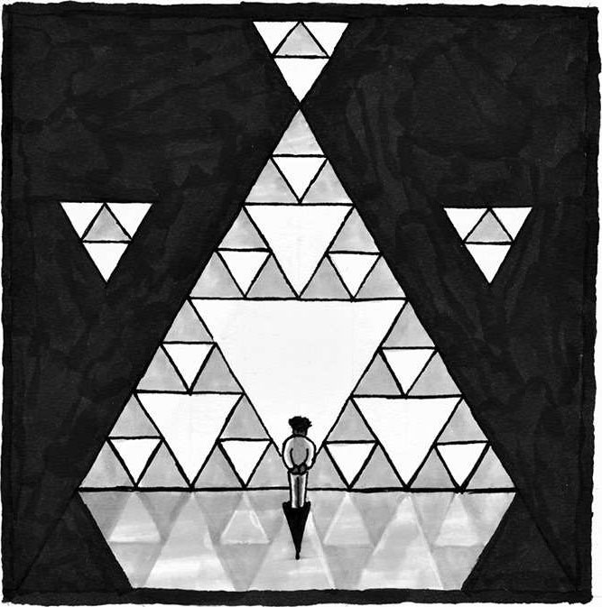
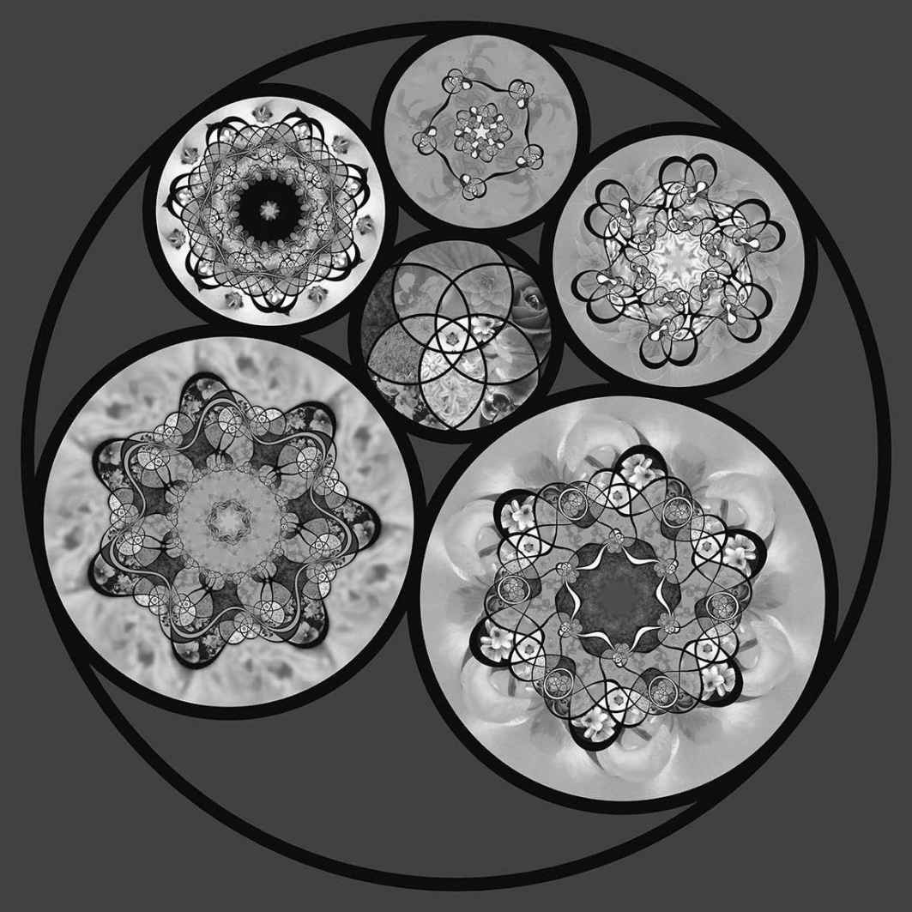
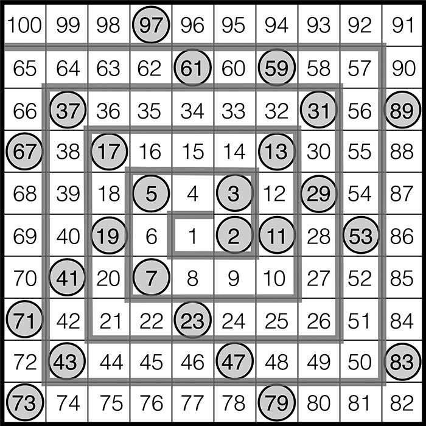
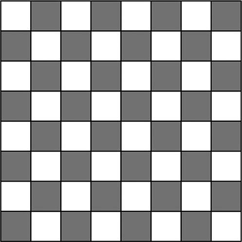

5 美
除了对数学洞察力有一种天然的渴求，人们还可以从数学的深刻见解中获取满足感，这两件事让数学变成了接近于艺术的存在。
——奥尔佳·陶斯基-托德
（Olga Taussky-Todd）1
为什么你会想和他人共享那些美丽的事物呢？因为这会让他（她）感到愉悦，也能让你在分享的过程中重新欣赏一次事物的美。
——戴维·布莱克韦尔
（David Blackwell）2
我念大学的时候，通识教育有很多必修内容，艺术课程便是其中之一。其实当时我对艺术之类的东西没什么兴趣，我之所以会参加“建筑赏析”课程，主要是因为朋友的建议，他觉得这门课程比较简单，我们俩可以一边懒洋洋地坐在凉爽、昏暗的大教室里，一边欣赏那些建筑图片。我从未想到这门课程居然给我带来了很多启发，甚至以各种方式改变了我的生活。在教授的引领下，我们踏上了一场美丽建筑的鉴赏之旅，明白了这些建筑备受推崇的原因。有些建筑我一眼就能看出它的鬼斧神工之处，有些建筑则要细细品味才能看出它的魅力所在。渐渐地，我看到了建筑形式和建筑功能之间的紧密关联，看出了建筑潮流的发展趋势，养成了独特的审美风格，明白了这种喜恶背后的原因，也越来越看重与建筑美学相关的文化内涵和历史背景。

上了这门课以后，我再也不会用以前那种眼光看待建筑了。如今，一般的建筑我只要看上几眼就能告诉你它的建成年代，甚至可以想象出这位建筑师想要借这栋建筑表达什么样的主题和愿景。我还记得我第一次走进哈佛大学校园看到塞弗楼时的感受。尽管我之前从未见过这栋建筑，但我还是认出了它的设计者——大名鼎鼎的建筑师亨利·霍布森·理查森（H. H. Richardson）。之所以会产生这种“啊哈！”时刻，是因为我已经对建筑之美产生了高度敏感性。
菲尔兹奖得主玛丽安·米尔札哈尼说过：“只有在那些最有耐心的信徒面前，数学才会展现出它美丽的一面。”1她的意思是，数学之美的绽放通常需要一定的时间。有时你需要费上一番功夫才能欣赏到建筑的美。数学的美也是这样，只要你拥有足够的耐心，一幅壮丽雄伟的画卷便会徐徐展现在你的眼前。
另一方面，数学之美有时也会突然浮现在数学探索者的脑海中——就在这灵光一现的瞬间，她苦苦思索的难题终于有了一个优雅的答案，这就是前面说的“啊哈！”时刻。一刹那间，所有的线索全部拼到了一起，一切都变得清晰明朗起来。就像我在塞弗楼的经历一样，数学中的那种豁然开朗，本质上是因深刻认知事物而产生的快感。
我相信很多人都曾亲身感受过数学之美，只是没有意识到而已。这就像在欣赏周边建筑时未曾深入观察一样，你只看到了建筑的实际功能，却忽视了它的表现形式。还有些人可能从未留意过身旁的建筑，这也没有关系——你需要花上一些时间来熟悉各种建筑，然后便能形成自己的喜好。所以说，如果你从未体验过数学之美，我会帮你弄明白前文中的“壮丽雄伟”“豁然开朗”到底是怎样一种感受，让你能够以一个数学探索者的身份去拥抱美丽的数学世界。
对美的渴求普遍存在于生活中的各个角落。我们当中有谁不喜爱美好的事物呢？一场动人心弦的日落，一首壮丽宏伟的奏鸣曲，一阕深邃悠远的诗词，一缕发人深省的思想……我们被这些美丽所吸引，为这些美丽而陶醉，因这些美丽而沉迷，想要尽己所能地去创造更多美丽。对美的渴求与生俱来，对美的表达则是人生丰盈的重要标志。
数学中当然也存在各种美丽的事物——具体形式多种多样——只不过很多人没有发现它们的美妙之处，或是因为没有机会去亲身体验，或是因为虽然体验过但没有意识到数学在其中扮演的重要角色。而对数学探索者和职业数学家而言，他们通常会把“美”看成是自己从事数学事业的最主要原因之一。甚至有研究表明，数学之美给数学家们带来的感受，其实和视觉之美、音乐之美、道德之美给大众带来的感受差不多——这些感受会激活大脑中专门处理情感、学习、愉悦、奖励的特殊区域。2
因此，如果你曾经欣赏过日落、奏鸣曲、诗歌之美，那你为什么不继续尝试一下数学之美呢？只要你想，就一定可以做到。
很多人都给美的一般属性下过定义，或做出过总结。美到底在何种程度上是主观的（取决于观察者本身），又在何种程度上是客观的（取决于被观察事物的内在属性），那些研究美学的哲学家们对此一直争论不休。我并不想去盖棺定论，因为在我看来这两种观点都有道理，答案不是非黑即白的。一方面，我们不能否认每个个体都有不同的品味和喜好，各自的文化背景也会对审美产生深远影响。另一方面，对于数学之美的根本特征，数学家们的确达成了几点共识。很多数学家都对此做过总结和归纳：数学家哈代认为，数学思想之美在于它的严肃性，还有各种出人意料的偶然性和必然性，以及表达方式的简洁性；哲学家哈罗德·奥斯本（Harold Osborne）查阅了大量和数学之美相关的文献，最后将其特征归纳为：井然有序、逻辑连贯、表达清晰、高雅优美、易于理解、意义丰富、思想深刻、形式简明、综合全面、发人深省；数学家威廉·拜尔斯在《数学家如何思考》一书中给出了充分的理由，认为数学之美完全基于以下几个重要特性：歧义、矛盾、悖论。3不过，向那些没有什么数学经验的人展现这些数学之美的特征，其实就像用温度、质感、酸度来展现美味寿司的诱人之处一样，让人感到一头雾水，不知所云。
向你描述一个你从未体验过的事物，其实就像向一个从未见过颜色的盲人朋友描述彩虹一样，似乎是一项不可能完成的任务。但事实上，盲人会设法将其附着在其他感觉官能、其他情感之上，以这种特殊方式来感受颜色。因此，我反对数学家保罗·埃尔德什（Paul Erdős）那过于悲观的态度，他在解释数学之美时有一句名言：“这就像在问贝多芬的《第九交响曲》美在哪里。如果你自己悟不出来，那别人也没法跟你解释。”4
我会想办法向你解释。不过，“井然有序”“表达清晰”“高雅优美”这种冷冰冰的词语怎么会让你产生切身感受呢？所以相较于他人对数学之美的阐释，我更愿意把精力放在对数学之美的体验之上。
在我看来，数学之美有四种类型。
第一种，也是最通俗易懂的一种，即“感官之美”。对于那些有规律的事物，你可以利用自己的视觉、触觉、听觉去直观地感受它们的美。这些事物可以是自然的，也可以是人造的，甚至可以是虚拟的。沙滩上的波痕、宝塔花菜中的分形图案、斑马身上的条纹，全都遵循着某种数学定律。音乐是一种能让人听出美感的规律性声波。每种文化中的艺术作品都具有某种规律，有些作品在创作时甚至借用了复杂的数学思维。绗缝图案风靡全球，伊斯兰艺术因其复杂的几何设计而享誉天下。芒德布罗集（Mandelbrot set）是一种引人注目的几何图案，无论放大多少倍，你都能感受到一种极其相似的美感。20 世纪 80年代，个人计算机性能已经强大到可以将这种图案设为屏保，自此之后，芒德布罗集很快就吸引了人们的眼球，激发了公众的想象力。
这种感官可以直接感受到的数学之美，很像大自然带给我们的感觉，你会像漫步在美丽的森林当中一样快乐。你会对那些映入眼帘的、井然有序、遵循规律的事物产生敬佩之感，开始关注那些不易察觉的细节。你的灵魂得到了抚慰，逐渐平静下来。如果你曾经到访巴黎的圣礼拜堂，看到阳光经由五彩斑斓的玻璃倾泻而入，沐浴在各种光怪陆离又层次分明的光斑之中，你就会明白我在说什么。建筑和音乐可将数学具象化，给人身临其境的感觉，所以这种美感相当强烈。每当沉醉在弗兰克·法里斯（Frank Farris）那些利用花结图案（见下图）阐释施泰纳推论的艺术作品里时，我都会有这种感受。你从对称的图案、平滑的曲线、巧妙的角度中获取“感官之美”时，实际上不就是在体验蕴藏于自然世界中的抽象代数、微积分和几何学吗？

数学家弗兰克·法里斯运用复分析的方法，创造出了这种以花结图案为主题的艺术形式。这组图是施泰纳推论的一个实例。施泰纳推论主要研究的问题是：给定两个圆，看看在这两个圆中，什么情况下可以存在一组首尾相连的圆链，链中每个圆都同时和两个给定圆相切，就像上图一样。其中组成圆链的那些圆中填满了玫瑰花结图案，而这些玫瑰花结图案的颜色则来自最中间的圆中的花卉拼图（虽然原版图片是彩色的，但即便以黑白色彩呈现，这幅图仍是如此引人注目）
这种感觉可以解释为什么数学之美常常会涉及“有序”和“简明”这两个因素，因为它们让人感到万物和谐、心神宁静，给人带来灵魂上的安谧。由此可见，虽然“感官之美”是数学之美中最容易感受到的一种美，但它的深度和内涵却并不简单。即便你不懂任何数学知识，也能感受到这种美，因为它的存在本身就可以博人青睐。请珍视“感官之美”，在它的引领下，你将逐渐学会以数学探索者的眼光来感知世界。
我将第二种数学之美称为“惊奇之美”，其中惊奇可以具体分为两种感觉：惊，指的是看到叹为观止的事物时，心中产生的崇敬和惊叹；奇，指的是心中产生的好奇，这会使我们陷入沉思，感到疑惑，开始提问。感官之美通常会涉及真实事物，而惊奇之美通常会引发一场思想对话。
惊奇之美有时会伴随感官之美而产生。看到一个漂亮的几何图案，你可能会想知道这种图案是怎么形成的。听到一段振奋人心的和声，你可能会想知道为什么这段音乐如此慷慨激昂。“怎么”和“为什么”都会引发你和数学之间的思想对话。刚才你欣赏法里斯的那幅艺术作品时，是不是就在猜测这种绚丽的图案到底是怎么画出来的？即便不知道答案，你仍然可以体验到惊奇之美。
惊奇之美有时也会独立于感官之美而产生。数学家在等式中发现了美（比如E=mc2），其实并不是在欣赏等式的书写形式，而是在欣赏等式中包含的思想，在思索能量和质量之间转换关系的奥妙，在赞叹少许的质量居然可以等于庞大的能量。如果你觉得下面这个公式很美：
eπi+ 1 = 0，
可能是因为你找不到明显的理由去解释，为什么全宇宙最重要的 5 个常数竟然会出现在同一个等式当中。这种不同寻常、出人意料的事物，正是哈代提到的数学之美的基本元素，它可以给我们带来惊奇之美，因为出人意料的事物可以激发我们的好奇心，让我们开始思考“为什么”。
莫里茨·科内利斯·埃舍尔（M. C. Escher）是一位著名的荷兰视错觉艺术家，他那些充满了惊奇之美的作品总是能够引人注目，令人流连忘返。即便我们的视线早已离开，思绪通常还是会继续停留在他的那些画作之上，久久难以转移。他的作品中经常蕴含着各种数学概念，比如对称、无限，同时还会尝试模糊掉不同参考系的界限，借此来诠释各种主题。他喜欢绘制各种现实中不可能存在的场景，比如1953 年的《相对性》、1961 年的《瀑布》，这两幅作品都具有一种奇妙的特性，具体表现为它们兼具局部可能性（在小范围内观察，一切都合情合理）和整体不可能性（从整体上观察，现实中不可能存在这种场景）。惊奇之美常常能够在观察者和数学之间引发一场思想对话，埃舍尔的作品便是一个典型的例子。
1963 年，数学家斯塔尼斯拉夫·乌拉姆（Stanislaw Ulam）出席了一场冗长枯燥的科学会议。根据马丁·加德纳的描述，当时发生了这样一件事：
为了打发时间，乌拉姆在纸上随手画了几组水平线和垂直线，勾勒出了一个网格。本来他打算在网格上演算一些和国际象棋相关的问题，不过他很快便改了主意，开始在网格中填写数字：网格正中心填 1，然后按照逆时针顺序，一圈又一圈地把自然数依次填进去。随后他漫无目的地用笔圈出了所有的素数。令他惊讶的是，这些素数似乎大量集中在某些直线附近，冥冥之中好像存在着某种不可思议的规律。5
后来大家发现，将这种螺旋填数的方法扩展到相当巨大的规模之后，这种规律依旧存在（自己试试吧！）。不过，直到我写下这些文字，这种规律仍然没有得到令人满意的解释。总之，惊奇之美有时会产生于游戏当中，乌拉姆的网格便是一个很好的例子。如果你也遇到了类似出人意料的规律，那你肯定会情不自禁地问上一句“为什么”。好奇之余，你还会心存敬畏。

乌拉姆螺旋（The Ulam spiral）。
那些素数（即网格中圈起来的数字）似乎大量集中在某些斜线附近
第三种数学之美可以称为“感悟之美”，这是一种在理解过程中感受到的美。它和前两种数学之美有所不同：感官之美侧重于真实物体，惊奇之美侧重于思想上的火花，而感悟之美侧重于推理分析。对数学探索者来说，依靠逻辑分析得出正确推论是远远不够的，通常情况下还需要找到最佳的证明方法，比如那些形式最简明或者见解最深刻的方法。数学探索者们会用一个特殊的词语来形容这种感受，那就是“优雅”。保罗·埃尔德什总是跟人们说，上帝手中有一本“天书”，上面记载了所有最优雅的数学定理证明方法。6
感悟之美依赖于优雅的推理分析，就像诗文之美依赖于遣词造句。因此，感悟之美拥有一个不同寻常的特点，那就是它在很大程度上取决于表达方式的选择。原本优雅、清晰的证明，如果表达方式欠妥，那别人也看不出这种优雅和清晰；但如果表达得当，它就可以像诗文一样触动灵魂，或是像一个讲得很棒、结局出人意料的笑话一样令人心情愉悦。感悟之美带来的那种感觉可以令数学探索者们甘之如饴。
悉尼歌剧院之所以能够成为世界上最具标志性的建筑之一，主要是因为它特殊的建筑风格：顶部的壳状结构，再加上周边的海港环境，很容易让人联想到扬帆远航的壮阔景象。至于顶部为什么会呈现这种样貌，则涉及一个和“感悟”相关的故事。歌剧院的设计方案来源于一场设计竞标。1957 年，约恩·乌松（Jørn Utzon）的方案成功中标，但他的方案最初比较潦草，其中关于壳状造型的部分有些含糊不清。随后他又针对壳状造型给出了几个不同的抛物线设计，但这些设计从实际施工的角度来看根本行不通。后来，尽管施工成本和屋顶设计这两个问题都没有确定下来，但迫于政治压力，歌剧院还是于 1958 年正式动工了。在施工过程中，屋顶设计又经历了数次更新，但建造成本问题还是没能解决，因为每一个壳状构造及表面铺设的瓷砖都需要与之对应的模具，数量实在过于庞大。此外，各个壳状构造之间的交界线到底该定于何处，也是一项极大的数学挑战。在 1961年年底，乌松终于茅塞顿开。悉尼歌剧院的官网上记载了当时发生的事情：
乌松当时正在利用体积巨大的模型研究壳状结构的堆叠方式，以便腾出更多空间。突然之间他意识到，这些壳状结构看起来好像没有什么本质区别。之前他觉得每个壳状结构都不相同，而现在他激动地发现，它们其实具有极高的相似性，每个壳状结构都来源于一个单一、恒定的形式，比如球体的表面。
这种蕴含在“重复”当中的简明性和易用性立刻吸引了大家的目光。
这意味着利用这种重复性极强的几何结构，大家可以预先设计好整个建筑形式。不仅如此，建筑外层的瓷砖也可以预先设计好整齐划一的图案。这个兼具单一性和统一性的发现，最终使悉尼歌剧院呈现出了如今人们眼中那独树一帜的建筑风格：从别具一格的拱形穹顶，万古长新、神似风帆的剪影造型，到美轮美奂、光彩照人的外饰瓷砖，无不令人沉醉其中……
对于这种至关重要的问题，无论以何种标准来看，它都是一项近乎完美的解决方案：它使建筑超越了单纯的风格——在这个例子中指贝壳外形——凝练成了一种可以永久流传下去的、广泛存在于各种球体中的几何思想。7
悉尼歌剧院
乌松那一瞬间的感悟，通常又被称为“啊哈！”时刻。在数学中，这就是模糊不清的事物忽然变得清晰明朗——比如找到了一个优雅的解，或者简明易懂的证明过程时，人们所体验到的那种顿悟的快感。随之而来的，便是看清事物全貌、一切都可以解释得通之后那种心潮澎湃、欣喜若狂之感。
数学中这种感悟之美，很像逛街时偶然发现了一件你从未想过你会有这种需要的商品，而它刚好能满足某种你从未意识到的需求；也像看悬疑电影时发现所有线索都能在结局中成功串到一起，从而完美揭示最终真相。此外，就像人们喜欢反复观看电影，寻找更多细节一样，数学探索者也喜欢回顾自己感悟出的论证，思考它的前因后果，思考它的具体应用，或者思考它会不会派生出新的结论。
有时我们脑海中会闪过一些并不优雅的答案，这种情况下我们不再激动兴奋，只会长松一口气——痛苦的折磨终于结束了。冗长乏味的论证通常显得很笨重，同时也很容易被人遗忘；也难怪论证的简明性和清晰性总能令人想到“美”这个概念。
人们常常会自发地分享那些具有感悟之美的趣题，下面这个蚂蚁问题便是某次数学会议上一个和我素不相识的人分享给大家的。
这道趣题存在一个相当优雅、简明的答案。当你亲自发现这种解法时，你就会经历一次前文提到的“啊哈！”时刻（如果需要提示，请参考列于本书最后的“解题思路与参考答案”）。
------原木上的蚂蚁------
现在有 100 只蚂蚁随机分布在一根原木上，原木从最左端到最右端共长 1 米，每只蚂蚁都只会朝着左端或右端前进，行进速度全部恒定不变，均为每分钟 1 米。两只蚂蚁相遇时，他们会彼此调头，然后继续以每分钟 1 米的速度朝着两端走下去。若是有蚂蚁成功走到了原木的最左端或最右端，它就会掉下去。最终，在某一时刻之后，所有蚂蚁都会掉下原木。
请问：考虑每一种可能的初始状况，为了确保原木之上不再有任何蚂蚁，你需要等待的最长时间是多少？
感悟之美有时会出现于电光石火之间，有时也会随着时间的推移慢慢显现出来。在刚开始接触的时候，我根本看不到很多数学思想的美之所在，直到后来在各种不同场景中它们一遍又一遍地出现在我的眼前，我才逐渐有所感悟。对偶是各个数学领域中经常出现的一个主题，它指的是某些天然成对的数学概念，比如乘法与除法、正弦与余弦、并集与交集、点与线等等。为了理解对偶，我们可以想象一面镜子：尽管我们会在镜子面前看到两个相貌有细微差别、举止有些许不同的生物，但它们实际上就是同一个生命体。起初我对对偶这种概念有些不以为意，直到后来在不同情景中屡次遇到对偶现象，我才逐渐感悟到它的美。
数学之美最极致的体验，在于“超越之美”。虽说超越之美可以放大感官之美、惊奇之美、感悟之美，或是被这三种美所放大，但实际上超越之美远远超出了这三种美的范畴。通常来说，我们会在目光从某个具体事物、思想、推理过程转向某种更普遍的真理时体验到超越之美——比如领会到了某项数学成果背后的深刻意义时，或者发现了这种成果和其他已知数学思想之间的密切关联时。若是能够切身体验到超越之美，你就会产生一种深深的敬畏感，甚至会产生感恩之情。数学家乔丹·艾伦伯格（Jordan Ellenberg）在《魔鬼数学》（How Not to Be Wrong）一书中是如此描述这种感觉的：
事实上，数学中的顿悟（突然之间对当前发生的事有了清晰通彻的理解）具有一定的特殊性，因为生活的其他方面几乎不可能给你带来类似的感觉。一旦产生这种顿悟，我们就会觉得自己已经触及宇宙的本质，马上就要揭开某个惊天的秘密，但这种感觉只可意会，不可言传。8
很多数学探索者会在这个形而上的问题中体会到这种超越之美：为什么数学在解释世界方面具有如此强大的力量？阿尔伯特·爱因斯坦曾发出过这样的疑问：“数学毕竟只是一种独立于经验而存在的、经人类思想活动而形成的产物，它怎么会和现实事物吻合得如此精妙？这是不是说，哪怕没有任何经验，人类仅凭逻辑推理也能理解真实事物的属性？”9他借这些文字表达了自己在体验到超越之美时所产生的敬畏之情。我们在品味他的话语时，其实也是在体验超越之美。
在某些可以将两个不同领域关联在一起的理论中，数学探索者们也会发现类似的超越性，有时短短几个字便可以让我们感受到这一点。“魔群月光猜想”（Monstrous moonshine）是一个相当奇特的名字，它指的是 20 世纪 70 年代末期，科学家们在数论和被称为“大魔群”的巨大对称结构之间发现的某种出人意料的关联性。10这种出人意料具体表现为，数论里面一个重要函数当中的某些系数，居然同时以大魔群的重要维数之和的形式出现。1992 年，理查德·博赫兹（Richard Borcherds）成功证明，猜想中的关联性的确存在，更令人惊讶的是，它们均与弦理论有关！这项研究成果最终帮他赢得了菲尔兹奖。在随后的采访中他表示，获得这项荣誉并不像当初解决问题时那样令人兴奋。他如此描述了自己的感受：“成功证明月光猜想的一刹那，我的‘喜月’之情简直难以言表。当时我就想，如果证明过程真的没错，那么那种兴奋感还能再持续好几天。有时我会想，这会不会就是嗑药之后那种神魂颠倒的感觉？当然我并不知道答案，毕竟我没有亲身体验过。”11
人们可以在不同程度上，从感官之美、惊奇之美、感悟之美中体验到数学的超越之美，所以这种体验不是一种非此即彼的“能不能”的问题。当雄伟建筑带来的感官上的几何之美直击我们的灵魂时，当我们看到一个简单的概念居然能够以不同形式同时出现在不同数学领域时，当我们发现某个优雅的证明可以推广到更多情况之中时，我们都会或多或少地感受到超越之美。
我们在世界中发现的那些超越之美，会给我们带来这样一种感受：在不为人知的地方，一定还有某些尚未被发现的、超越了我们当前认知的事物，它们可能代表了宇宙的终极意义。C.S.刘易斯曾将美的至高体验形容为“我们未曾发现过的花朵的芬芳，我们未曾聆听过的旋律的回响，我们未曾踏访过的国度的传闻”。12同样，数学也可以给人带来超越感。当你看到同一个美丽的思想盛开于各个领域时，你会开始思考，它是不是指向了某个尚未掌握的、更深层次的真理；当你意识到你和另一个人有着完全相同的数学思想时——无论将你们隔开的是地理、文明，还是时代——你会开始相信，你们触摸到的是某种放之四海而皆准、不受时间和空间束缚的永恒之物。有种神秘的声音在我们耳旁窃窃低语，呼唤着我们去探索发现，去找到它们。
无论我们追寻的是哪一种美，它都可以帮我们养成深度思考的良好习惯，培养我们对美好事物的感恩之心、对超然之物的敬畏之心。之前在内华达山脉那次为期五天的徒步旅行，让我有时间有机会感受到荒野之地异乎寻常的美。当时是 7 月中旬，草地上结满了冰碴儿，踩在上面嘎吱作响，面前是一片闪闪发光的壮丽景色。我意识到我可能是这片土地上的第一名旅客。这一切的一切，让我产生了深深的感激和敬畏。对数学之美的不懈追求，不仅能够以独特的方式帮助我们养成上述品格，还可以激励数学探索者们在数学之路上不断地学习进步。就像我在内华达山脉徒步旅行的经历一样，对数学之美的不懈追寻不仅可以引领你走进独一无二的“世外仙境”，还可以让你以前所未有的方式洞彻事理。花上一些时间进行深度思考，可以让我们在学习数学的时候更加游刃有余，让我们在处理新信息的时候更加从容不迫。在当今这个数字化时代，我们每天都会遭受各种信息的狂轰滥炸，每天都会面临太多令人分心的事物，我们比以往任何时候都更加需要深度思考的空间。
习惯于欣赏数学当中的超越之美之后，我们会获得总结归纳的能力，它可以帮助我们在意想不到的地方发现普遍适用的规律。学习新定理时，我总会思考，是什么赋予了该定理如此强大的力量？它的基本原理是什么？如何才能让它适用于更广泛的情况？这种思考习惯可以延续到生活的各个方面。我按照新菜谱炒菜时常会思考这样一个问题：我能不能从这个菜谱中归纳出某种基本原则？比方说，无论做什么菜都要先放大蒜和洋葱碎，最后再放罗勒，否则它会变色。经常总结做菜的基本原则，习惯之后你就可以随心所欲地创作新菜品了。
如果数学可以促进人类繁荣，那么我们所有人都可以在掌握数学之美的过程中有所收获。不过，美的形式多种多样，我们可以利用这些美——比如艺术、音乐、图案、精美的工艺品、严谨的论证、简明深刻且优雅的思想，以及这些思想在现实生活不同领域中的巧妙应用——来激励自己去学习数学。
想要把这些美的事物和数学关联起来，你首先要分辨出它们在生活中表现出了哪种美，是感官之美，是惊奇之美，还是感悟之美？聆听它们背后的故事，你便能从这些不同种类的美中找出它们和数学相关的一面。
不幸的是，倘若教学方式不当，人们便很难感受到数学之美。把数学看作一堆毫无意义、毫无见解的死板规则，看作一系列无穷无尽的、永远枯燥乏味的重复性问题，必然会削弱自己的学习欲望。最近，我在某家主流报纸的专栏文章中看到这样一种呼吁，“请务必让你的女儿学习数学，她将来会感谢你的”。13可是这篇专栏文章自始至终没告诉各位父母如何才能把数学教好，好让他们的女儿现在就能感谢自己。其实，如果你能给孩子提供一些好玩有趣的问题，让她在无比优雅、出人意料的答案中看到数学美的一面，就可以很容易地激发她的学习热情。这些问题可以把枯燥乏味的数学练习变成令人兴奋的探索冒险，在尝过甜头、感受过数学中的真善美之后，她们会自然而然地想要一次又一次地重复这种经历。
这是因为，在体验过那些激动人心的美丽事物之后，我们必然会渴求更多的美。在数学之美给人类带来的所有美德中，“对美的倾向”可能是最重要的一个。就像你读到了一本好书时，自然会想要阅读这位作者的其他大作；就像你学到了一个新词时，自然会想要尽可能地把它放进各种句子当中；就像你感受到了运动带来的快乐以后，自然会想要每天坚持锻炼。
对数学之美的倾向，是一个人能够执着于数学的核心动力。无论问题有多难，你都不会轻言放弃，因为你知道，每次在数学之路上遇到新的挑战，都意味着你再一次拥有了欣赏美的机会。
------棋盘难题------
这次的问题非常经典，我觉得你很可能会乐在其中，毕竟很多人都觉得它的答案异常优雅。
想象一个 8×8 的棋盘，其中布满了正方形格子。现在你手里有一堆 1×2 的多米诺骨牌，每张骨牌都刚好可以覆盖棋牌上两个相邻的正方形格子。骨牌不允许叠加，也不许越过棋盘边界。如果在这种情况下仍旧可以用骨牌填满棋盘，我们就将这种情况称为“平铺”。

假如我们移除了位于某条对角线尽头的两个正方形格子，这种情况下还能用上面的骨牌平铺棋盘吗？（注意此时已经去掉了两个边角。）如果可以，请展示出平铺方法；如果不行，请说明原因。
克里斯托弗在下面的信中给出了问题的答案，所以如果你不想被剧透，可以跳过书信的第一段内容。此外，下面还有更多拓展问题等待你去探索。
弗朗西斯教授，您好：
希望您最近一切顺利。我觉得我已经找到了谜题的答案，那就是调整过的棋盘不可能实现平铺。理由如下：无论以何种方式平铺棋盘，每张骨牌都必须同时覆盖一个黑格子和一个白格子。然而，每条对角线上的两个格子都是一样的颜色。换句话说，调整过后的棋盘必然会多出两个黑格子，或是多出两个白格子。此外，同色格子总是处于斜线之上，它们不可能被一张骨牌所覆盖。调整之后，每次都需要同时覆盖 30 个黑格子（或白格子）和 32 个白格子（或黑格子），于是多出来那两个白格子（或黑格子）便无法被覆盖到。希望我给出的理由已经足够充分。其实我很讨厌给出这种“不可能”的答案，因为这让我感觉自己好像莫名其妙地就认输（放弃）了。
既然您建议我早点学习线性代数，那我忙完手头这个课程就去研究它。我记得某段摘录里提到过一本书，作者在书中用非线性方程描述了现实世界，还提到了爱因斯坦的研究成果。我还记得某本书里提到过，很早的时候古希腊人就知道欧氏几何无法精确描述现实世界。接下来我的任务就是阅读手中和线性代数相关的图书：它们一共有 3本，虽然其中的一本多达 505 页，涉及 2400 多个证明问题，但我决不会轻易放弃的。
拓扑学是一个相当有趣的学科，尽管它无比抽象。目前我的拓扑学习进度，应该算是还停留在入门阶段吧（具体来说我在学点集拓扑学，作者在序言中将其称为一般拓扑学），所以我还没学到多少和形变相关的知识。目前我遇到的拓扑概念主要包括拓扑空间、分离公理、紧化、单值化。现在我正在学习“连续性”这一章……
您是怎么判断自己给出的证明、实例到底好不好的？之所以这样问，是因为我在重温之前那本严谨工整的微积分教材时，顺带写了一个关于“为什么R3中的立方体是一个正规环”的证明。我感觉这次的证明比之前那次要好很多，因为我学到了很多拓扑证明方法。您觉得会不会存在这种情况，就是同一个证明题在数学领域A中的证明难度要小于它在数学领域B中的证明难度？到目前为止，我认为我最感兴趣的领域是数学分析、数论、计算理论等。现在我手头有好几本计算理论方面的书，但数学分析方面的书只有一本，而数论方面的教材则一本也没有。尽管如此，从我读过的那些涉及数论的内容来看，我认为它肯定是一个相当有趣的领域。
克里斯
2018 年 2 月 2 日